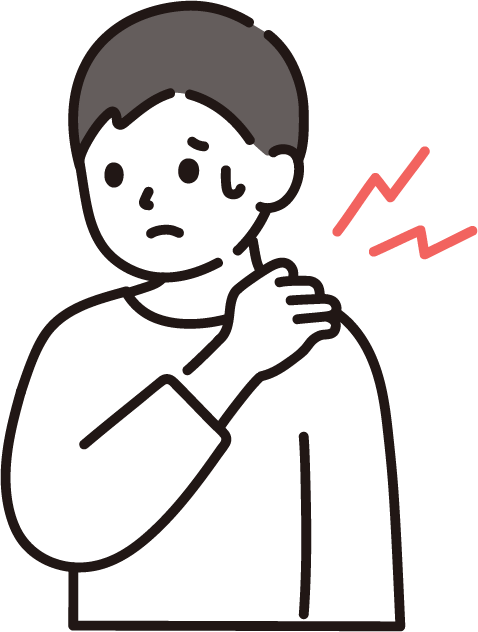
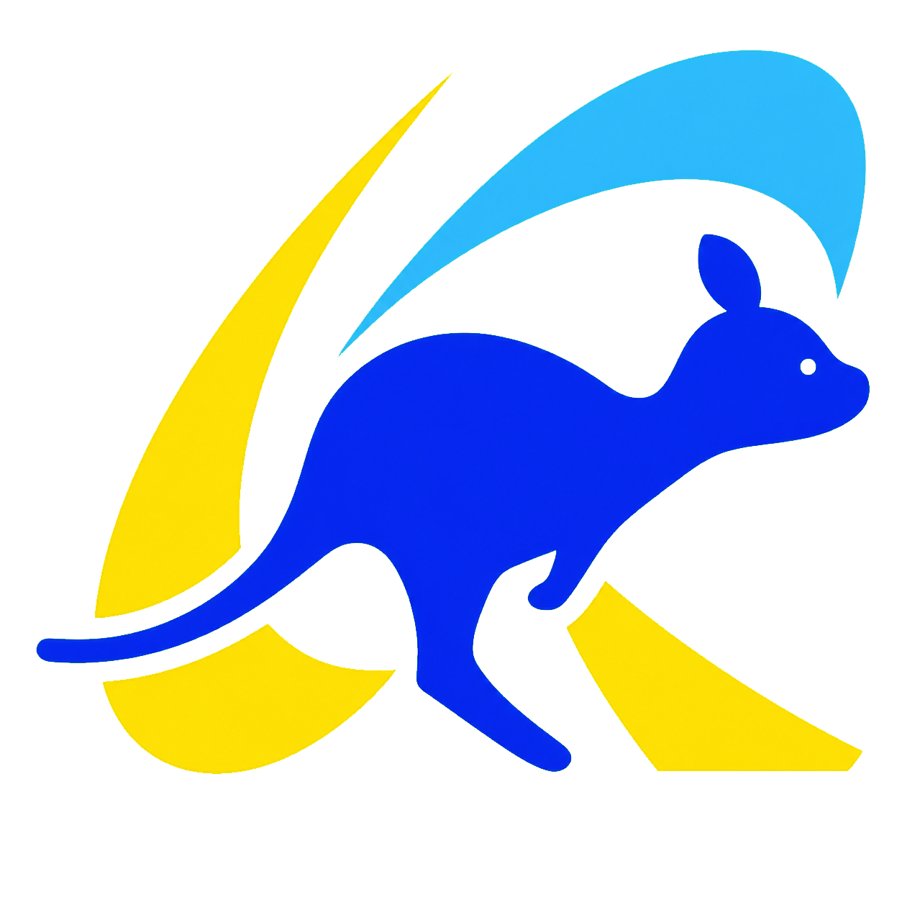
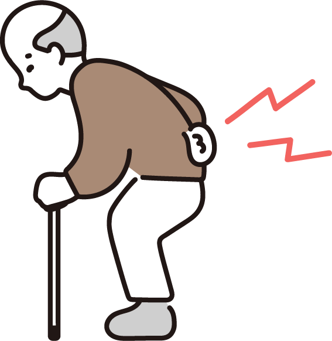
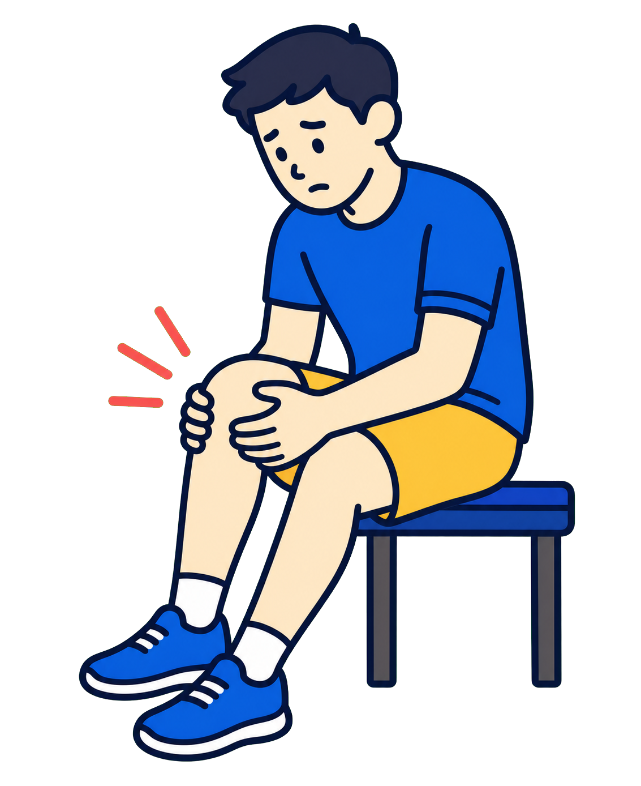
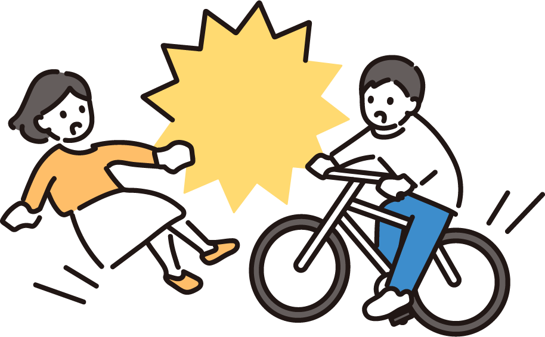
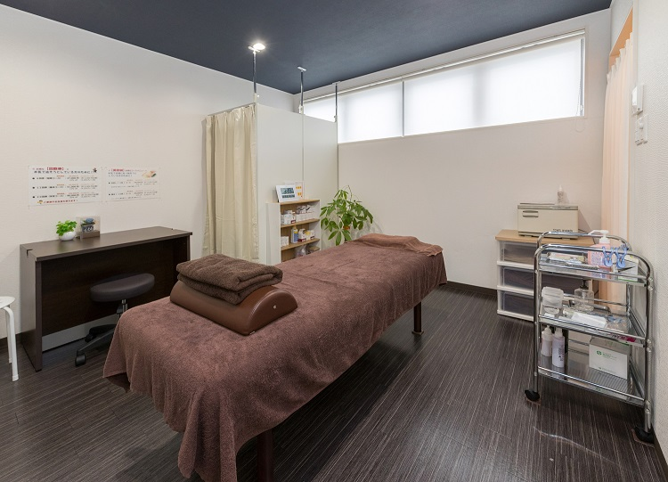

首・肩のつらさ
デスクワークや家事で感じる首・肩まわりのお悩み

近藤接骨院 お電話でのお問い合わせ 0742-95-6886掲載写真はレイアウト確認用のサンプルです
ABOUT
スポーツ中のケガはもちろん、日常生活で感じる身体のお悩みや交通事故後のご相談まで、 まずは気になることをお聞かせください。

デスクワークや家事で感じる首・肩まわりのお悩み

立ち仕事や日常動作で気になる腰まわりのお悩み

歩行や階段、運動時に感じる膝・足まわりの不調
骨折・脱臼・捻挫・打撲・肉離れなど、スポーツでの急なケガ

交通事故後に気になる痛みや身体の違和感
REASONS
駅から通いやすく、学校や仕事の帰りにも立ち寄りやすい立地です。
平日が忙しい方や、学校・仕事帰りの方にも通いやすい受付時間です。
国家資格を持つ院長が、身体の状態と施術内容を分かりやすく説明します。
外傷、自費による身体のケア、スポーツコンディショニングまで幅広く対応します。
交通事故後のお身体の不調や施術についてもご相談いただけます。現在の状況を丁寧に伺い、必要なご案内を行います。
DIRECTOR
臨床現場とスポーツ現場で培った経験を、日々の施術に。
大学卒業後、スポーツ整形外科に入職。約7年間の勤務を通じて、スポーツ外傷や整形外科領域に関する知識・技術を磨き、多くの患者さまへの対応に携わりました。そこで培った医学的知識と臨床現場での経験を、現在の施術や身体のケアに活かしています。
現在は奈良県のバスケットボールチーム「ヤマトライジング」の選手をはじめ、プロ野球選手など競技に取り組む方々の身体のケアやコンディショニングにも携わっています。また、森ノ宮医療学園専門学校では講師として、資格取得を目指す学生の指導にもあたっています。
FIRST VISIT
初めての方にも安心してご相談いただけるよう、施術までの流れをご紹介します。

01受付でお名前を伺い、現在のお悩みなどをご記入いただきます。
お体のお悩みや痛めたきっかけ、日常生活で困っていることを伺います。
身体の動きや状態を確認し、施術内容を分かりやすくご説明します。
お体の状態やご希望に合わせ、一人ひとりに適した施術を行います。
ご自宅でできるケアや、今後の通院についてお伝えします。
写真は8月10日撮影予定のため、現在はイメージ写真を使用しています。
← 横にスワイプしてご覧いただけます →
CLINIC
初めての方にも安心してお越しいただけるよう、院内の雰囲気をご紹介します。
← 横にスワイプしてご覧いただけます →
ご予約いただいた場合でも、前の方の施術状況により、ご案内時間が多少前後することがあります。ご来院前にお電話いただければ、当日の状況を確認し、より正確なご案内時間をお伝えできます。
☎ 0742-95-6886身体のお悩み、まずはお気軽にご相談ください
LINEの設定が必要です
公開前に、正式なLINE URLを設定してください。